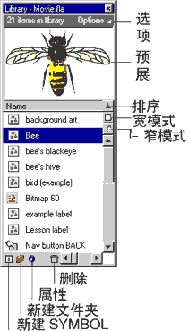

第二节 FLASH4 界面及功能介绍
作 者 : Kooler
咳……对不起，今天有点感冒。
上节简单对 FLASH 作了个简单介绍，大家对 FLASH 应该有个简单的了解吧，今天我就要正式开始讲怎么用 FLASH
了。
一、界面
大家都已经下载了 FLASH4 了吧，那就先让我们看看它长得什么什么样子 - 运行 FLASH.exe, 运行完后你就可以看到
FLASH4 的样子咯，如下图：

正如你所看到的， FLASH 的界面分 5 个部分（如图），即：
1 、图中标示“ 1 ”，即黄色框线标出部分为 FLASH 的菜单部分，除了绘图命令以外的绝大多数命令都可以在菜单条中实现。这与
WINDOWS 下的程序菜单条的使用基本上是相同的，只要知道它的名称就可以了，使用上没有什么太大的困难。不过如果你的洋文不行，就再
DOWNLOAD 一个汉化文件吧！
2 、图中标示“ 2 ”，即红色框线标出部分就是你使用 FLASH 制作影片的工作区域 - 场景，也就是你安排你的演员表演的舞台，它是你对你的电影中的各对象进行编辑，修改的场所，并且可以随时在舞台上观看你的演员们彩排（只要在
TIMELINE 上按一下鼠标，再按一下 ENTER 就可以了）。有时候你要制作一个比较复杂的动画或是连续剧时，你就要采用多场景来安排演出，这样便于制作和修改，场景的切换请看上图右上角，上图的影片就有两个场景：
SENCE1 和 SENCE2 。另外，你可以给你的几个场景命名，只要选要改的场景为当前场景，再选菜单 MODIFY->SENCE
再把你要的取的名字输入弹出来的对话框就行咯。
3 、图中标示“ 3 ”，即绿色框线标出部分为 FLASH 的绘图工具栏（如果你的 FLASH 中没有看到此工具栏，可选菜单
WINDOWS->TOOLBAR..., 在弹出的对话框里选 DRAWING 就可以咯，如果你想你的按钮再大点，再加选 LARGE
BUTTON 就 OK 拉），它包括 FLASH 所有选择工具和绘图工具，你的电影里的演员大部分都是使用这里的工具制作出来的。工具栏包括两个区域：一个是选择区，另一个是定义区（如图所示）。
 ，由于篇幅限制，选择区和定义区的各选项将在下一节单独介绍，你可要留意哦。：）
，由于篇幅限制，选择区和定义区的各选项将在下一节单独介绍，你可要留意哦。：）
4 、图中标示“ 4 ”，即兰色框线标出部分为 TIMELINE ，这里包含两个基本元素 -LAYER （层）和 FRAME
（帧），它起着组织和控制动画内各元素的作用。这里的层与 PHOTOSHOP 中的层的概念是一样的，均是透明的，只不过 PHOTOSHOP
中是图层， FLASH 中是动画层。使用 LAYER 可以设定动画在排列上的前后顺序，而使用帧可以设定动画在时间上出现的前后顺序。
FLASH 动画是由帧顺序排列而成的，即是用内插法计算得出的动画，是依据时间顺序生成的， TIMELINE 显示的是动画中各帧的排列顺序，即是你安排你的演员出场的先后顺序。
TIMELINE 也分两个区域：层操作区和帧操作区，如图所示：
再看 TIMELINE 上的状态显示条（请看上图），在洋葱皮右边显示着三个数据：“ 1 ”、“ 12FPS ”“ 0.0S
”，这几个是表示什么呢？它们分别表示当前动画的所处的场景、帧速率（及 FRAME RATE ）和动画的长度。其中帧速率的设定在制作动画时需要注意，因为帧速率的大小直接影响到动画播放的效果。帧速率的单位是帧
/ 每秒，在 FLASH 中默认的是 12 帧，由于计算机的显示器的荧光刷新特性，实际看到的相当于 24 帧 - 刚好达到了动画的一般要求，尽管这个默认速度也常常达不到。按
CTRL+L 弹出 MOVIE 设定对话框，在 FRAME RATE 中可以填入你需要的数值，不过不要太大，因为你要考虑到观看你的
MOVIE 的人们的 CPU 速度，如果设定太大，而用户的 CPU 速度较低时，动画播放就会产生不连续及一顿一顿的现象，一般来说，帧速率最好不要超过
20FPS 。
另外状态栏中所显示的“播放时间”是这个窗口显示动画到当前帧位置已播放了多长时间，该时间是以已播放帧数除以帧速率所得的，并不是实际播放时间，因此不论在什么机器上，该时间都不会变化。这个数字主要是用来同步各部分的播放时间的。
5 、图中标示“ 5 ”，即黑色框线标出部分为 LIBRARY ， LIBRARY 在 FLASH 里面起着组织管理动画内的全部基本元素。每个
FLASH 文件都包含有各种元素，如： BUTTON 、 BITMAP ， GRAPHIC ， MOVIE CLIP 、 SOUND
等，而这些基本元素全部存放在 LIBRARY 内，使你更容易对这些元素进行查找，编辑和设定。它的界面如下：

好了，现在你对 FLASH 的基本界面及功能大概了解了吧，下节要逐项具体介绍绘图工具栏的功能及设定。现在你是不是想试着做个动画？你可以先试做看看，呵呵，先预习一下，熟悉熟悉……
:)
OK ！下节课见。